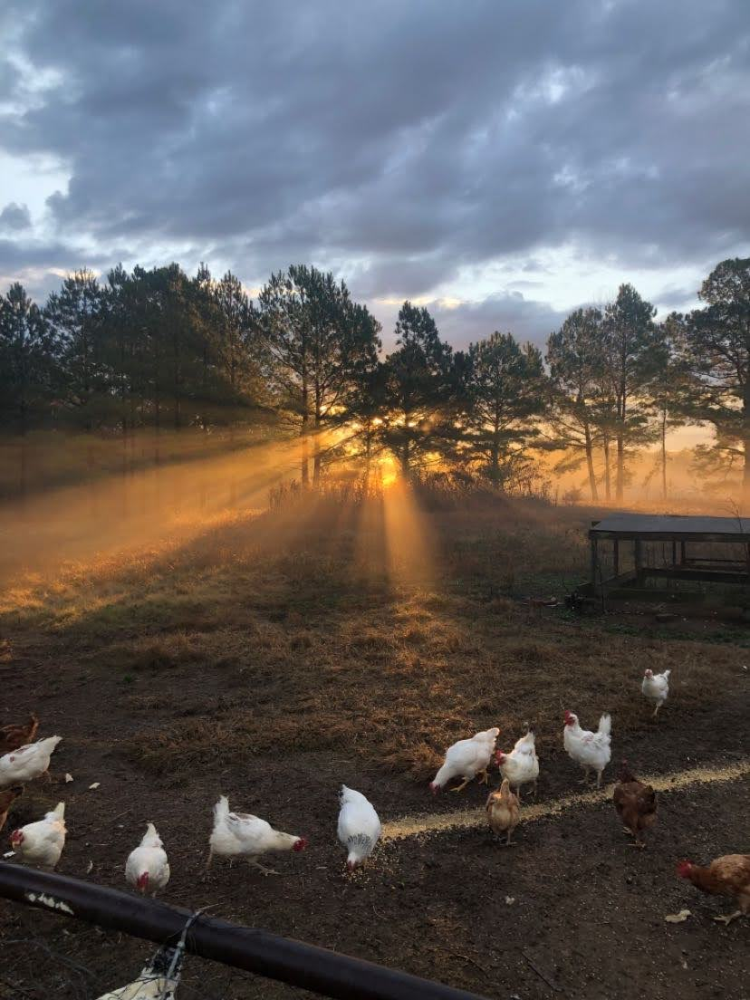
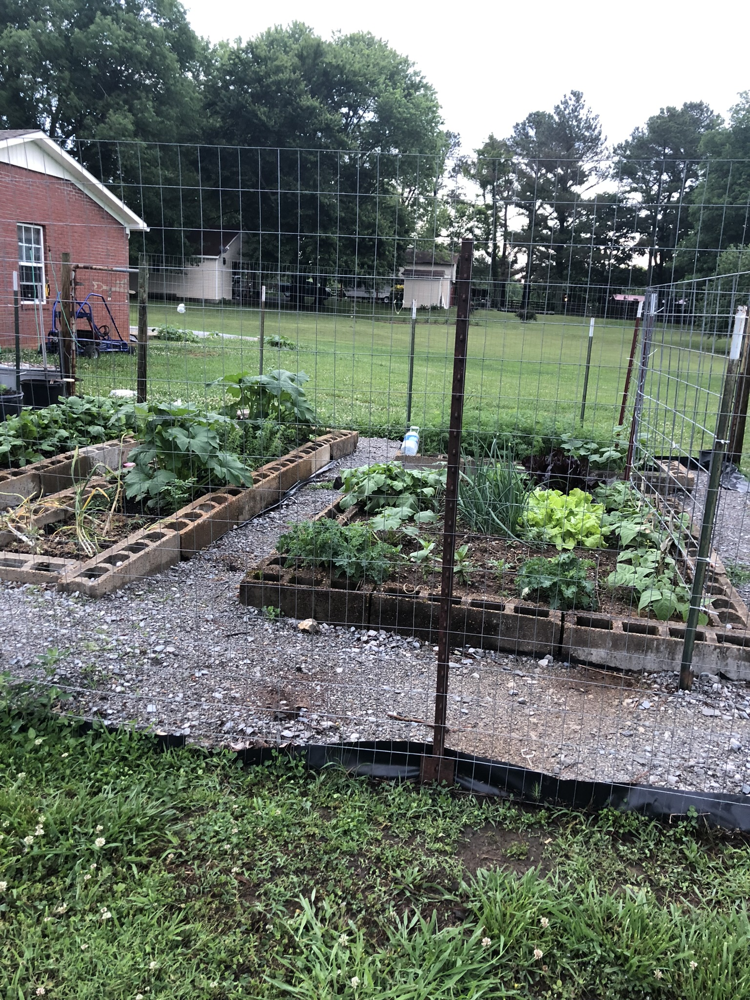
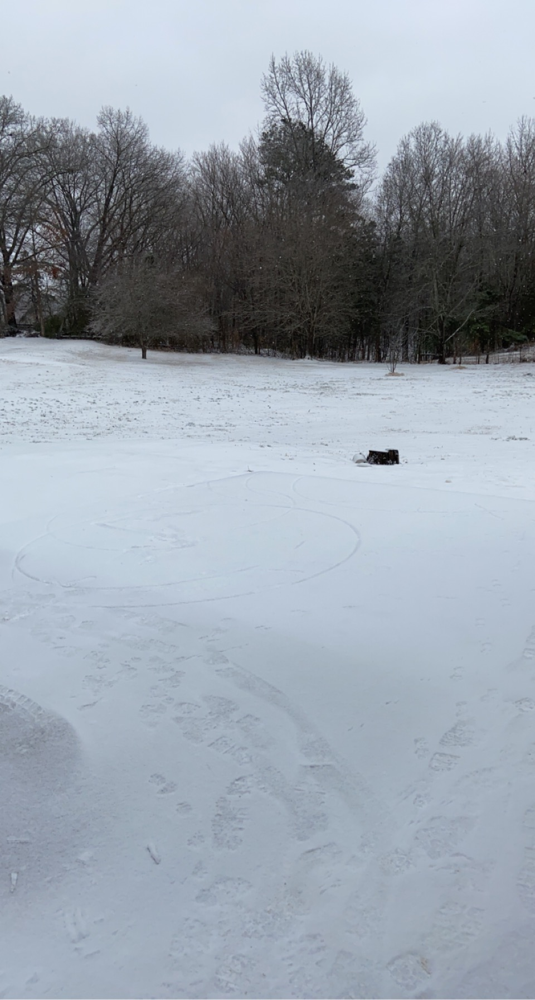
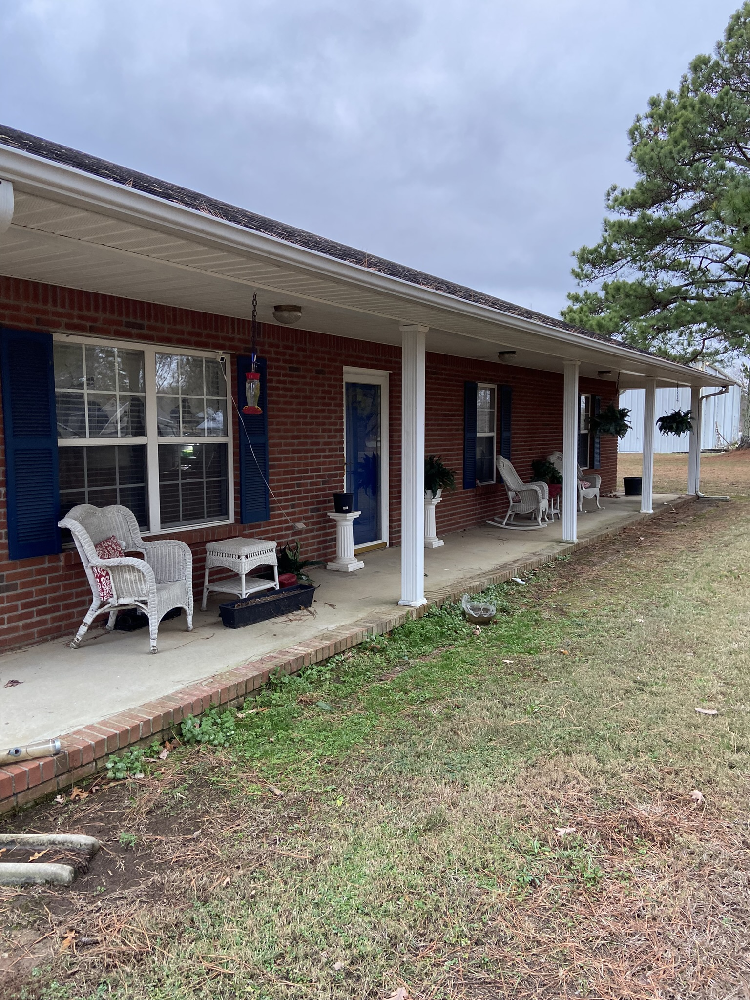
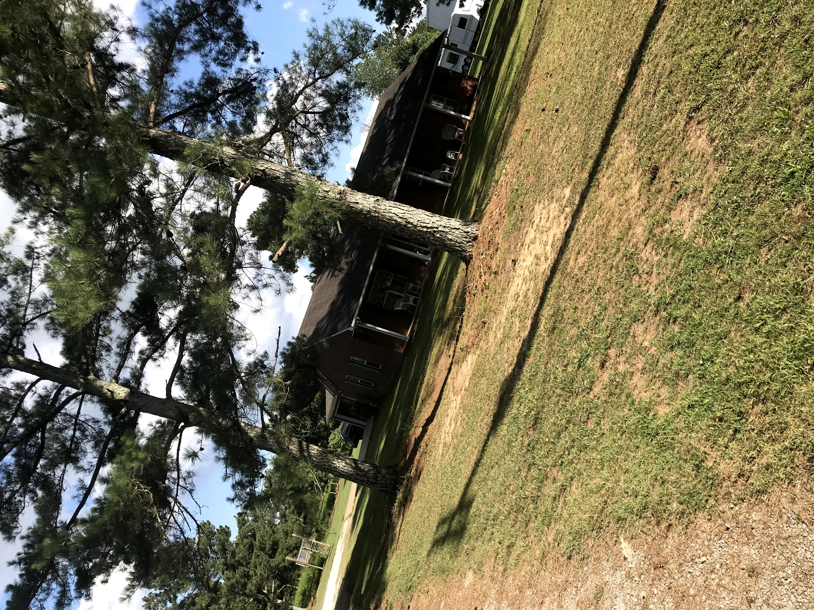

Chickens
A beautiful image taken of our pasture with our chickens. As much as I would like, this is not my photo. My dad took this fantastic picture.
Chickens provide an indespensible resource of food. We have not had to buy eggs in years, and we have eaten more chicken.
These chickens give my family some indepenence from the market and show our want for self-sufficiency.
Garden
This garden is my mothers favorite pastime, and it highlights my family's desire for self-sufficiency. We grow all sorts of vegetables, and we can them for use later in the year.
Welcome Outdoors

The outside of my house is incredibly lively! Between garden and chickens, it is constantly moving and growing.
This arial view of my house shows a U shape. This is not signifigant, I just think it is funny.
Obligatory Snow Picture
The one time a few years ago when it actually snowed more than a dusting.
Snow is wonderful.
Porch
Our front porch is a neglected reminder of my family's attempt to make our lives look stable and uniform. We get swept up in the business of life too often to maintain the porch.
Prime example: this picture was taken after two freezes and our fake furns are still up: mocking the neighbors dead furns with their plastic life.
Yard
The yard was a staple of my childhood. I spent countless hours running around with sticks with my brother and cousins. It was a host for all sorts of imaginary situations.
More recently, the yard has become a host to our many plants and animals. We have apple trees, blueberry bushes, and grape vines.